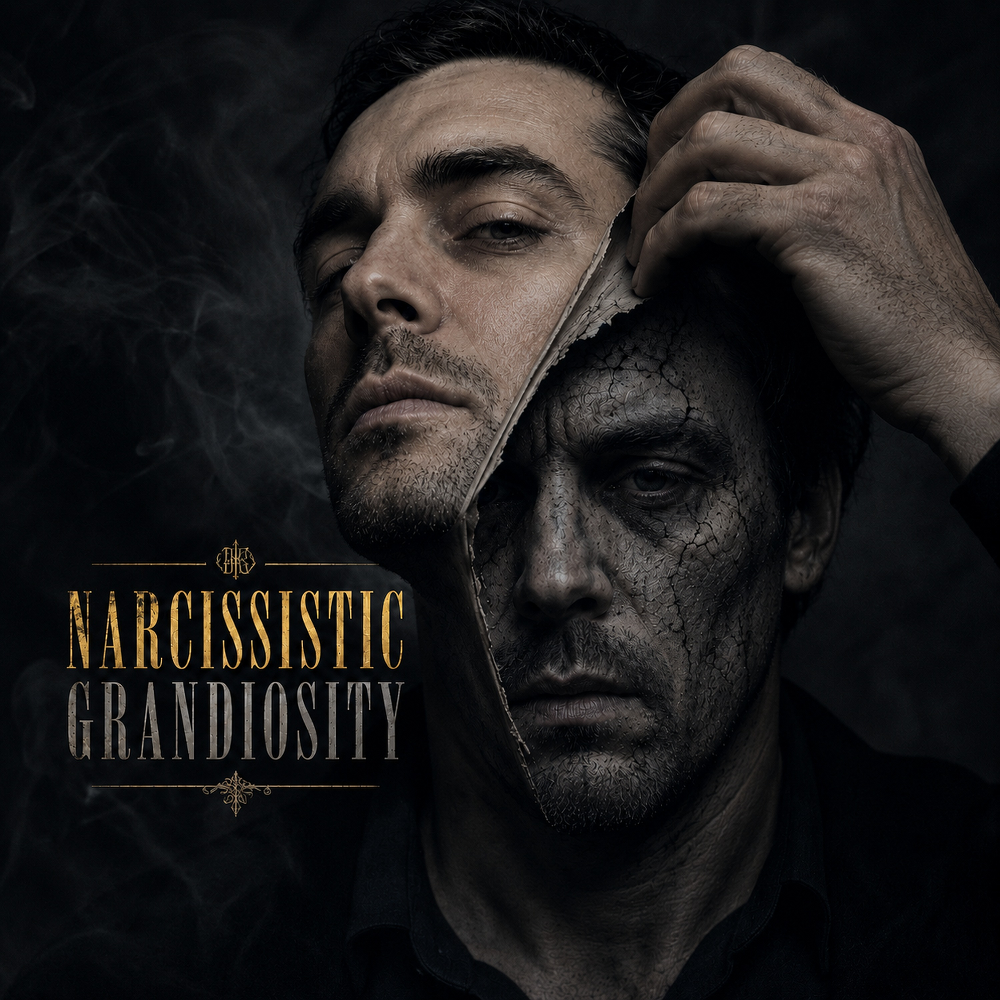
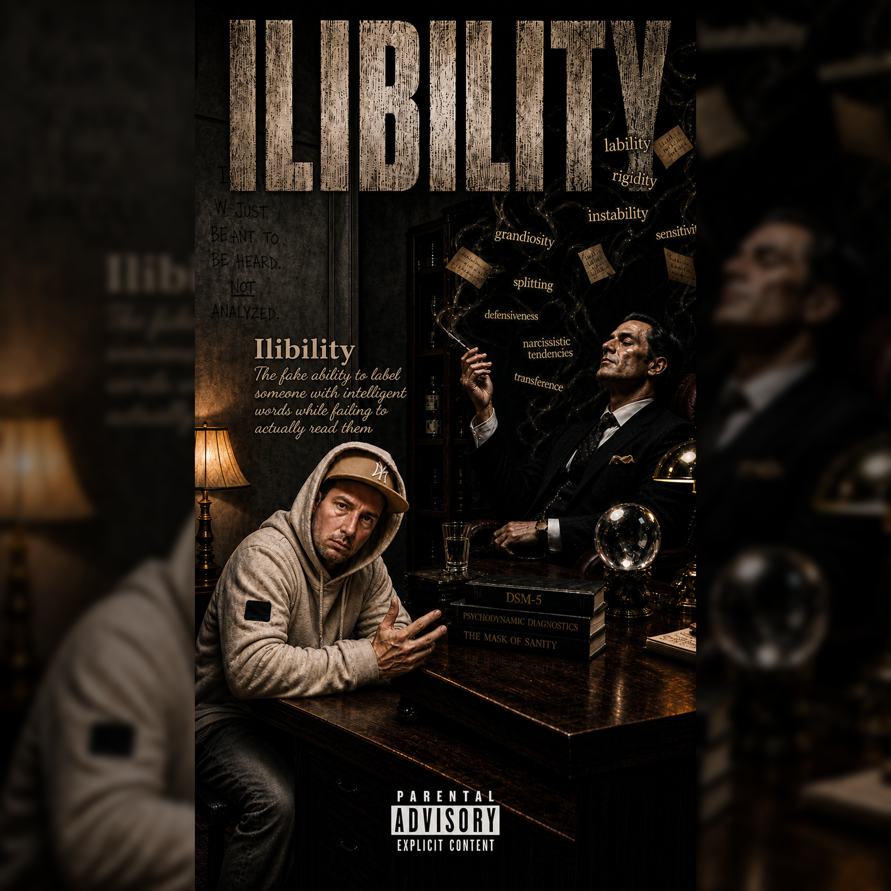
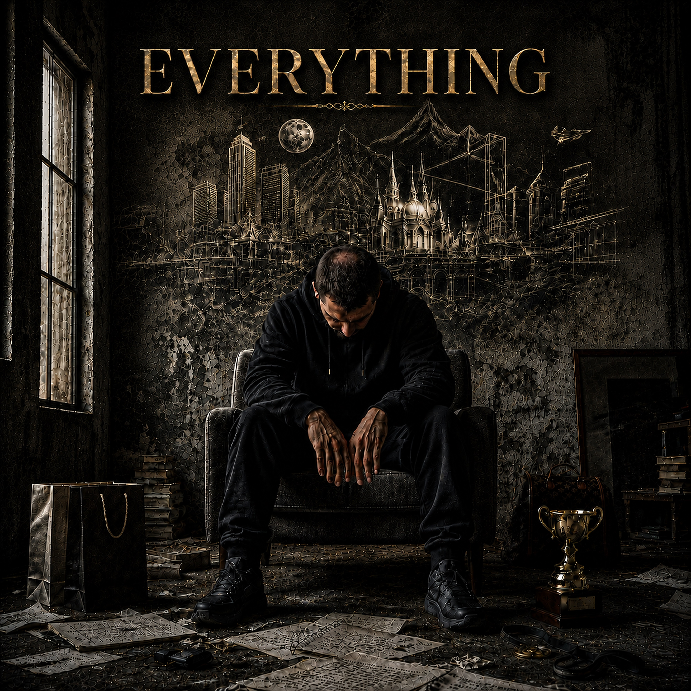

✍
Songwriter
Personal writing with sharp language, internal dialogue and emotional detail.
Heartship Records presents
Songwriter, producer and performing artist creating dark cinematic music from the parts most people hide.
This is not a polished mask built for fame. It is a place for the thoughts that got too heavy to carry alone, turned into songs, visuals and performances that might make someone else feel less strange in their own head.
Biography
Jay Vale is an independent songwriter, producer and performing artist working under the creative banner of Heartship Records. His music lives somewhere between confession, confrontation and survival. It is not made to sound perfect; it is made to sound like something finally breaking through the wall.
The sound is cinematic, heavy, emotional and direct: dark alternative pop with hip-hop influences, raw vocal delivery, haunting melodies, minimal strings, strange rhythms, and choruses that feel more like pressure escaping than entertainment.
The songs are built from inner conflict, mental pressure, family scars, numbness, anger, shame, self-mockery and the strange kind of hope that refuses to sound happy. Jay does not write to look healed. He writes because the wound has information.
As a performer, Jay Vale brings the words like someone arguing with himself in public. Some lines are controlled and cold. Some are breathless. Some sound like they were almost not meant to leave the room. That tension is the point: the music does not hide the fracture; it lets the fracture speak in rhythm.
As a producer, the goal is atmosphere before perfection. The beat should feel like a room. The strings should feel like memory. The drums should not just move the track forward; they should push against the chest.
Jay Vale is not presenting himself as a role model. He is presenting himself as evidence: that a person can be damaged, sarcastic, angry, tired, intelligent, confused and still be trying to turn all of that into something useful.
Personal writing with sharp language, internal dialogue and emotional detail.
Dark cinematic production shaped around mood, tension and space.
Rap, spoken confession and melodic hooks delivered with controlled intensity.
Music as mental survival, self-study and connection instead of empty attention.
Why I do this
The reason behind the music is not fame. Fame is loud, but it does not automatically make a person feel heard. The real reason is mental health. Writing gives a language to things that otherwise turn into pressure, distance, rage, numbness or silence.
Some people journal. Some people talk. Some people disappear behind a mask and call it functioning. Jay Vale turns that mask into a microphone. The songs are a way to investigate the mind without pretending the answer is always clean.
This music is not a cry for attention. It is a refusal to keep pretending that everything unspoken eventually disappears. The songs take the thoughts that usually get hidden behind jokes, anger or silence and put them where they can be looked at properly.
If the music reaches others, the hope is not that they idolize the artist. The hope is that they recognize a piece of themselves, maybe understand their own coping mechanisms a little better, maybe find words for something they could not explain, maybe feel less alone for three minutes and forty seconds.
Artist statement
I am not trying to sell the perfect version of myself. I am trying to document the version that had to survive, the version that learned to joke while breaking, the version that can explain pain better than comfort.
Heartship Records is the name for that mission: carrying heavy things through sound, without pretending the ship is not damaged. The point is not to look untouched. The point is to keep moving while the water is still coming in.
For anyone who recognizes this
Depression does not always arrive as crying in bed or giving up completely. Sometimes it starts quietly. You still go to work. You still answer people. You still make jokes. You still look “fine” from the outside. But inside, everything starts costing more.
You begin to postpone the smallest things. Messages feel like pressure. Showering feels like a project. Rest does not recharge you anymore. The things that used to give you peace start feeling pointless. And because you can still function in some places, you start questioning if you are even allowed to struggle.
Asking for help does not mean you are weak. It means something in you still wants to be reached. You do not have to wait until everything collapses before you are allowed to speak.
You are allowed to say: “I am not okay, and I do not know how to fix it alone.”
This page is not medical advice. It is a hand on the shoulder from someone who knows how heavy pretending can become. If you feel unsafe or afraid of what you might do, please contact emergency help or a crisis line in your country immediately.
Latest releases
These songs were released this month and are now part of the Jay Vale catalog: attention mistaken for love, ego as armor, clinical language turned into satire, and the brutal gap between ambition and collapse.
Released
A dark emotional track about mistaking attention for love, living for the spark, and going cold when the glow fades.

Released
A sharp, swaggering track about ego as armor, confidence as performance, and turning pain into charisma before anyone can use it against you.

Released
A sarcastic, confrontational track about clinical jargon, fake authority, and the difference between analyzing someone and actually understanding them.

Released
A heavy emotional track about wanting everything, feeling unable to do anything, and trying to accept that survival can still be progress.
Heartship Records
Heartship Records represents independent creation with emotional purpose. It is not a corporate machine pretending pain is a marketing angle. It is a creative home for songs that come from pressure, self-analysis and the need to turn private chaos into something structured enough to share.
The name stands for carrying what is heavy without pretending it is light. Heartship is about movement with damage still visible. It is the sound of a person trying to transport grief, rage, numbness and memory into something that might help someone else decode their own mind.
A ship can be damaged and still move. A heart can be heavy and still carry something. That is the foundation: music as a vessel for the things that almost drowned the person holding them.
The journey
Before it became an artist project, the writing was a way to keep the mind from turning everything inward. Lyrics became a place to put thoughts that were too heavy to keep carrying silently.
The music developed into dark alternative pop with hip-hop influences, confession, aggression, melody and atmosphere. The songs are built around emotional honesty rather than commercial polish.
The goal is not to be placed above the listener. The goal is to stand next to them and say: maybe this thing in your head has a name, maybe your reactions came from somewhere, maybe you are not the only one.
For listeners, press and collaborators
Music that gives shape to mental noise. Songs for people who are tired of being told to simply be positive when the real work is much messier than that.
Strong concepts, emotional writing, direct vocal identity, visual storytelling and a clear world around the music: dark, symbolic, cinematic and honest.
A performance built on intensity, spoken truth, controlled anger and melodic release. Not background music. Not a mask. A room forced to listen.
Jay Vale represents a modern independent artist using music as self-documentation: trauma-informed storytelling, cinematic production and mental health reflection without softening the edges.
Contact
For music, visuals, collaborations, interviews or performance inquiries, contact Jay Vale / Heartship Records.
jay.vale.heartship@gmail.com